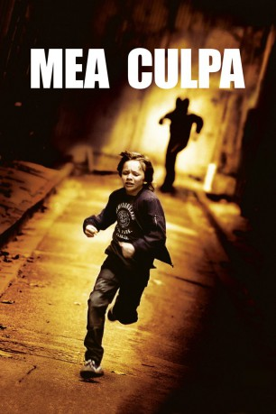

#2839 Mea Culpa - Im Auge des Verbrechens
 
 IMDB-Wertung: 6.1 / 10
IMDB-Wertung: 6.1 / 10  Metascore: 0
Metascore: 0 
Die Polizisten Franck (Gilles Lellouche) und Simon (Vincent Lindon) sind privat beste Freunde und feiern eines Abends ausgelassen den erfolgreichen Abschluss eines ihrer Fälle. Auf dem Nachhauseweg verursachen sie einen folgenschweren Verkehrsunfall, bei dem zwei Menschen ihr Leben verlieren. Der schwer verletzte Simon, der betrunken am Steuer saß, verliert kurz darauf seinen Job, seine Familie und muss für sechs Jahre ins Gefängnis. Franck hingegen bleibt unversehrt und kann weiter als Polizist arbeiten. Als Simon Jahre später als gebrochener Mann aus dem Gefängnis freikommt, heuert er bei einer Sicherheitsfirma an und versucht so gut es geht für seinen mittlerweile 9-jährigen Sohn Théo da zu sein. Als dieser zufällig Zeuge eines Mordes wird und die Täter daraufhin versuchen den Jungen auszuschalten, macht Simon gemeinsam mit Franck unerbittlich Jagd auf die Gangster.
Jahr: 2014
Dauer: 90 Minuten
FSK: 16
Land: Frankreich Studio: 20th Century Fox of GermanyTonspuren: DD5.1 - ,
Untertitel: Englisch,
Auflösung: 1080p (1920x816) Größe: 6963 MB
Genre: Action, Thriller
Regisseur: Fred Cavayé
Drehbuch: Fred Cavayé, Guillaume Lemans, Olivier Marchal
Soundtrack: Cliff Martinez
Darsteller:
 Vincent Lindon als Simon
Vincent Lindon als Simon Gilles Lellouche als Franck Vasseur
Gilles Lellouche als Franck Vasseur Nadine Labaki als Alice
Nadine Labaki als Alice Velibor Topic als Milan
Velibor Topic als Milan Tomi May als Oleg
Tomi May als Oleg- Gilles Cohen als Pastor
- Max Baissette de Malglaive als Théo
- Medi Sadoun als Jacquet
- Cyril Lecomte als Jean-Marc
- Gilles Bellomi als Andrei
- Sacha Petronijevic als Pietr
- Pierre Benoist als Boris
- Alexis Manenti als Slobodan
- Sofia Essaïdi als Myriam
- Eric Bougnon als Karl
 Pierre Nisse als Kevin
Pierre Nisse als Kevin- Justine Fabre als Manon
- Nicolas Abraham als Policier hôpital
- Eric de Montalier als Policier hôpital
- Magalie Mateci als La soeur de Franck
- Stéphane Blancafort als Homme IGS
- Fabien Baïardi als Père mafieux
- Chloé Dol als Fille père mafieux
- Emmanuel Gradi als Docker restaurant Alice
- Olivier Farge als Père femme accident
- Nicky Marbot als Patron Alice
- Yann Sundberg als Capitaine Bompard
- Mour als Gérant du Why Not
- Léticia Belliccini als Jolie prostituée Why Not
- Mathieu Milella als Policier Why Not
- Thierry Pathiaux als Agent SNCF gare
- Christelle Cornil als Contrôleuse TGV
- Emmanuel Bloch als Contrôleur stagiaire TGV
- Laurent Fernandez als Mafieux Why Not
- Marc Galtié als Médecin SAMU accident Simon
- François Bredon als Homme de main Why Not
- Aurèle Dussart als Théo, 3 ans
- Cristina Da Silva als Dealeuse voiture
- Sylvain Gabet als Dealeur voiture
- Enzo Solet als Doublure Théo
Datei: X:\2014(G-M)\Mea Culpa - Im Auge des Verbrechens (2014, FSK16, 1920x816).mkv seit 23.12.2015
Festplatte: HD 2013(I-Z)-2014(A-Z)
 Es gibt insgesamt 136 Filme in der Gruppe '2014(G-M)'
Es gibt insgesamt 136 Filme in der Gruppe '2014(G-M)'